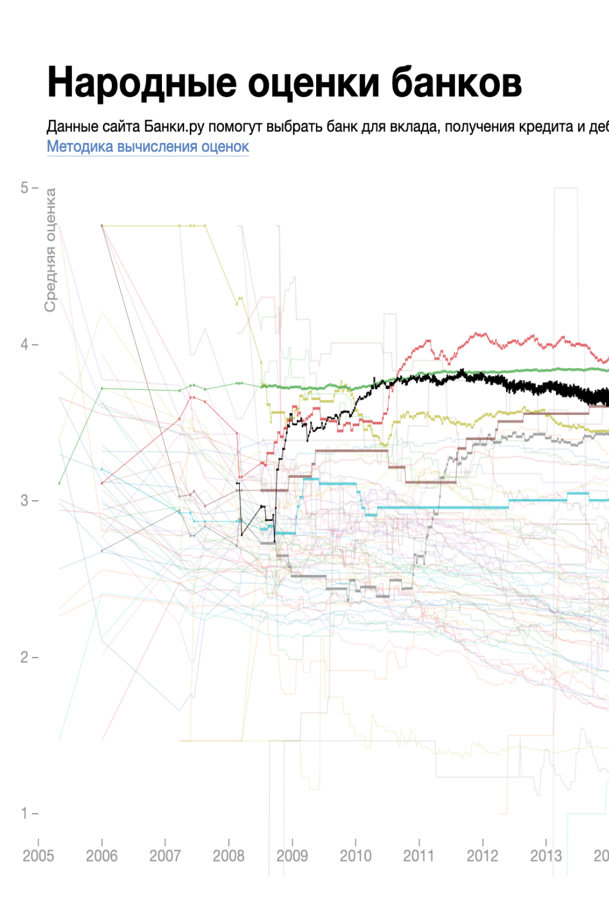
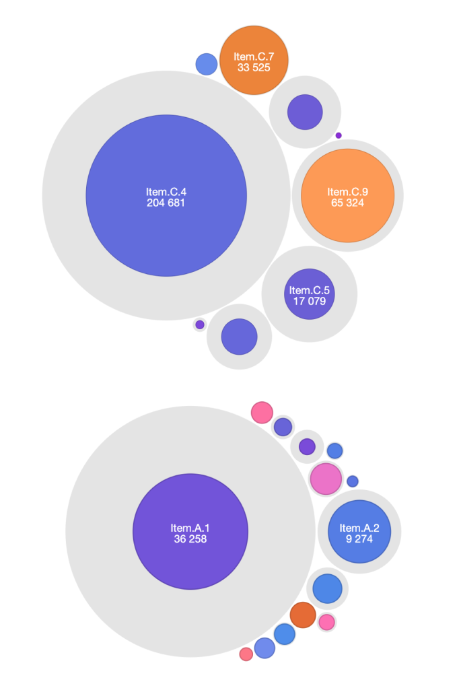

{% assign projects = site.projects | sort: "weight" %}
{% for p in projects %}
  {% assign url = p.url %}
  {% if p.redirect %}
  {% assign url = p.redirect %}
  {% endif %}
  <a class="thmb thmb-{{ p.size }}" href="{{ url }}">
    
    <h2>{{ p.title }}</h2>
    {% if p.size == "m" %}
    <div>{{ p.description }}</div>
    {% endif %}
  </a>
{% endfor %}

{% comment %}


<a class="thmb thmb-small"  target="_blank" href="http://hktn.dianov.org/">
  
  <h2>The capital repairs datavis made on hackathon</h2>
</a>

<a class="thmb thmb-small"  target="_blank" href="http://banki.dianov.org/">
  
  <h2>The rating of Russian banks</h2>
</a>


<a class="thmb thmb-large"  target="_blank" href="https://idea-go.tech/index-en.html">
  
  <h2>The site of IDEA project</h2>
  <div>Particularly, we've redesigned the scheme of the Internet of Energy and made an animated version, which is available on the website along with explanations, to make the topic clear to the broad audience.</div>
</a>

<a class="thmb thmb-small" target="_blank" href="https://onder.tech">
  
  <h2>The site of ONDER</h2>
</a>

<a class="thmb thmb-small"  target="_blank" href="https://illus0r.github.io/packcharts/">
    
    <h2>The prototype of&nbsp;a&nbsp;packed circles dashboard</h2>
</a>

<a class="thmb thmb-large"  target="_blank" href="http://slackshop.dianov.org/antalya/">
    
    <h2>The site of highlining course</h2>
    <div></div>
</a>
{% endcomment %}

